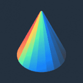
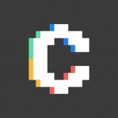
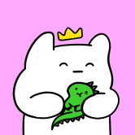
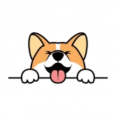
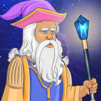
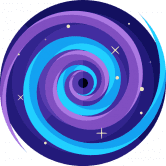
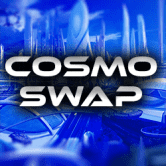
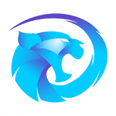
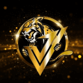
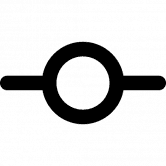

COMMUNITY MINER 2.0 是什么让这个矿工与众不同？ 很高兴您提出要求！ Community Miner 制定了多项反倾销和反鲸鱼措施，以确保项目的寿命。这些措施包括最大存款，最大提款，以及提款的截
CommunityGaming.io Community Gaming 是一体化的电子竞技竞赛平台，为主要的行业利益相关者提供尖端的基础设施。 通过其无缝的用户体验以及高度可扩展和高效的区块链支付技术，该平台为
 Conic Conic Finance 是一个易于使用的平台，可让流动性提供者分散对多个 Curve 池的风险敞口。 Omnipools 为 Conic 提供了便利，Omnipools 将流动性分配给多个 Curve 池中的一项资产。
 Convex Finance Convex 允许 Curve.fi 流动性提供者在不锁定 CRV 的情况下赚取交易费用并声称提升 CRV 。 流动性提供者可以轻松获得提升的CRV和流动性挖掘奖励。 如果您想质押 CRV，C
 Coolman's Universe Spesh 在 Coolman 的宇宙中寻找他最好的朋友。 为了穿越这个宇宙，Spesh 使用了冲浪板和指南针。 这个指南针不是普通的指南针。 这个指南针不仅为 Spesh 指明了寻找他
 Corgidoge 什么是科尔吉多奇 (CORGI)？ 生态系统 Corgidoge 是一个房地产投资应用程序，电子商务平台，加密货币交易所旨在最大化 CORGI 币的利益。长期发展导向的CORG
 Cosmic Wizards Cosmic Wizards 是在 Harmony 区块链上的开放世界 Cosmic Universe MMORPG 中居住在 Crypton 星球上 Cosmic Island 的 10,000 名巫师的神奇集合。 -在 Harmony 区块链上以 0.0001 美元的费用和 2 秒的 tx 确定性铸造。 -将在即将到来
 CosmicSwap 介绍CosmicSwap 是一个收益农场和聚合器，目前位于币安智能链和 Polygon 网络上。 CosmicSwap 允许您质押您的代币并获得 $COSMIC 作为奖励。 它是由一组开发人员设计和
 Cosmo Swap 通过每天耕种获得 CCLP CCLP 是 MetaCosmo 生态系统的内部代币。 在耕种 CCLP 时，你将这些代币和 USDT 暂时发送到一个特殊的智能合约中，并以新的 CCLP 代币的形式获得奖励。 通过此
 Cougar Optimizer cougar 优化器旨在基于复利的力量优化 DeFi 用户的利润，节省用户时间，并通过创造性的自动化、最佳的复利频率和高效的气体利用来实现更高的收益。 这有多棒？ 与
 Cougar Vault CougarSwap Vault - Cougar 生态系统的一部分 - 为重视可持续代币经济学、安全性和谨慎风险管理的长期投资者设计的单产农业优化器。 CougarSwap Vault 专注于复利的力量，节省用户时间，
 Counterstake Counterstake 是连接 Obyte、以太坊、BSC 和 Polygon 的完全去中心化的跨链桥。 在几分钟内在网络之间转移代币以享受更低的费用并使用其他网络上可用的 dapp。 该
Crane Miners The Crane Miners NFT 10.000 独特的矿工将永远存在！每个人每天可以挖掘 1 分钟，以获得尽可能多的代表 CRANE 代币奖励的石头、黄金或宝石！ 游戏玩法 用户必须选择一名矿工才能
Crazy Defense Heroes Crazy Defense Heroes 手机游戏现已推出全新的“游戏即赚”“每日明星宝箱”活动。 Crazy Defense Heroes 手机游戏是即将推出的使用不可替代代币和 TOWER ERC-20 的塔防区块链游戏的基础。 该游戏
CrazySkullzNFT 一支由 10,000 名独特的 CrazySkullz 组成的军队从死里复活，困扰着我们的星球并承诺毁灭它！ 战争、死亡或疾病的气味使他们更加强烈。 数百年来被杀害的最残暴的罪犯旨在
CreatureToadz CreatureToadz 是 Creatures 和 CryptoToadz 这两个独立成功的 NFT 社区之间的第一个交叉项目。 艺术是从头开始制作的，以确保两者之间*完美*的风格结合。 不遗余力，我倾注了我的灵魂，将
CROATOM CROATOM 是 CRONOS 链上第一个获得 $ATOM 奖励的代币。 只需持有代币即可自动获得 9% ATOM 再分配（反射）奖励！ 税制9% 原子奖励CROATOM 的每笔交易的 9% 以
Crodex Crodex 是一个去中心化交易所 (DEX)，提供流动性并支持 Cronos 上的点对点交易。 我们开始吧：CRX Metaverse Hub 2.0 — 在 CROWD Launchpad 上的初始代币销售和启动Metaverse
Croge CrogeCoin 是在团队认识到 Cronos 社区是受人尊敬和专业的，但缺少一件事时创建的； 炒作。 CrogeCoin 旨在将 meme 硬币的炒作和乐趣带入 Cronos 链。 该团队着手在一个对他们来说完全陌生
CroKing 购买 CroKing (CRK) 并持有。 赚取CRO！ CroKing 使用 Cronos 平台代币 ($CRO) 向您付款。 相当于在以太坊链上赚取 ETH。 CRO 是 Cronos 链的平台代币，有无数的用例，其中最受欢迎的是强大
CronaSwap CronaSwap 是 Cronos 链上第一个提供最低交易费用 (0.25%) 的去中心化交易平台。 您可以在 Cronos Chain 网络上轻松交换 CRC-20 代币，保证卓越的速度和更低的网络交易成本。 CronaSwap 旨在成为 DEX 平台
Cronos Live Lottery Cronos Live Lottery 是一种 CRC20 代币，每天数次通过自动 MMF 奖励支付奖励其持有者。 秘密推出并由 Crofam 社区管理，我们来这里是为了让你赢..！ 主要目标是成为 Cronos 网络上最大、
CroSea 什么是 Crosea？ Crosea 是在 Cronos 区块链上交易不可替代代币 (NFT) 的最大开放 nft 市场。 使用 CRO、Wrapped USDT 和任何 CRC20 代币，Cronos 社
Cross Pool Cross Pool 是 Hot Cross 产品套件的成员，该产品套件提供了一种安全且去中心化的方式来奖励用户质押 LP 代币和单面传统 BEP20 代币。 该协议在技术上适用于各种 Staking 场景和任何
Darkside Finance Darkside Finance 是唯一真正由用户拥有的收益农场。所有矿池和农场都会产生两个代币！ CZDIAMOND 是一种所有权代币，质押者获得所有存款费用的 75% 和所有其他平台收入的 50% 作为
DashLotto 玩我们新的 100% 可证明公平的彩票：DashLotto！一张 10 TRX 门票，您将赢得两个大奖！每天奖励 1000 DASH，每周累积累积 TRX 头奖 每张票都让您有平等的
Datamine Datamine Network 是一个新的非托管和去中心化开源经济系统，它使用智能合约来创建自适应货币。我们的双代币 DeFi 协议每 15 秒产生一次红利。 由燃烧证明支持的加密货币 Datamine
daVinci NFT Marketplace daVinci 市场是一个 NFT 市场，支持创建、购买和销售在 Harmony 区块链上铸造的 NFT（不可替代代币）。这意味着，与使用 ETH 的 Rarible 或 OpenSea 相比，Harmony 原生代币 ONE 推


 是一种奖励代币，为持有 $CRK 支付 $CRO。")